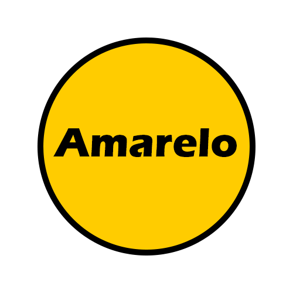
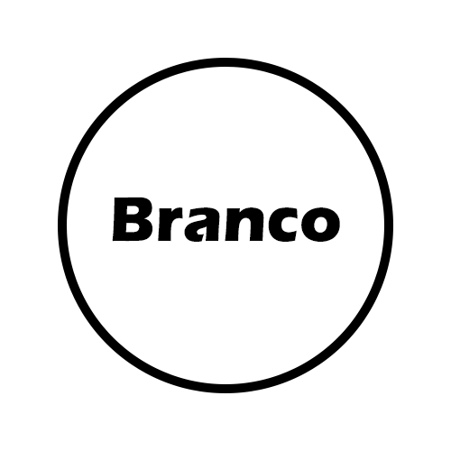
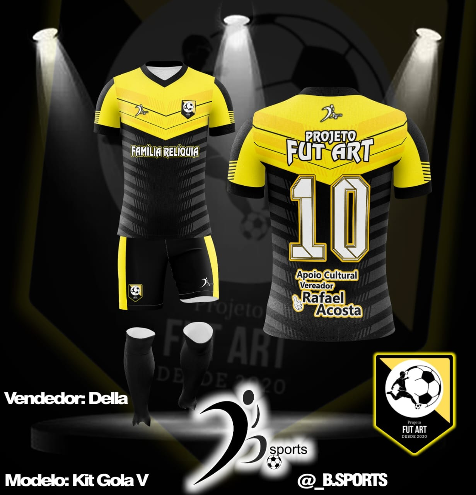
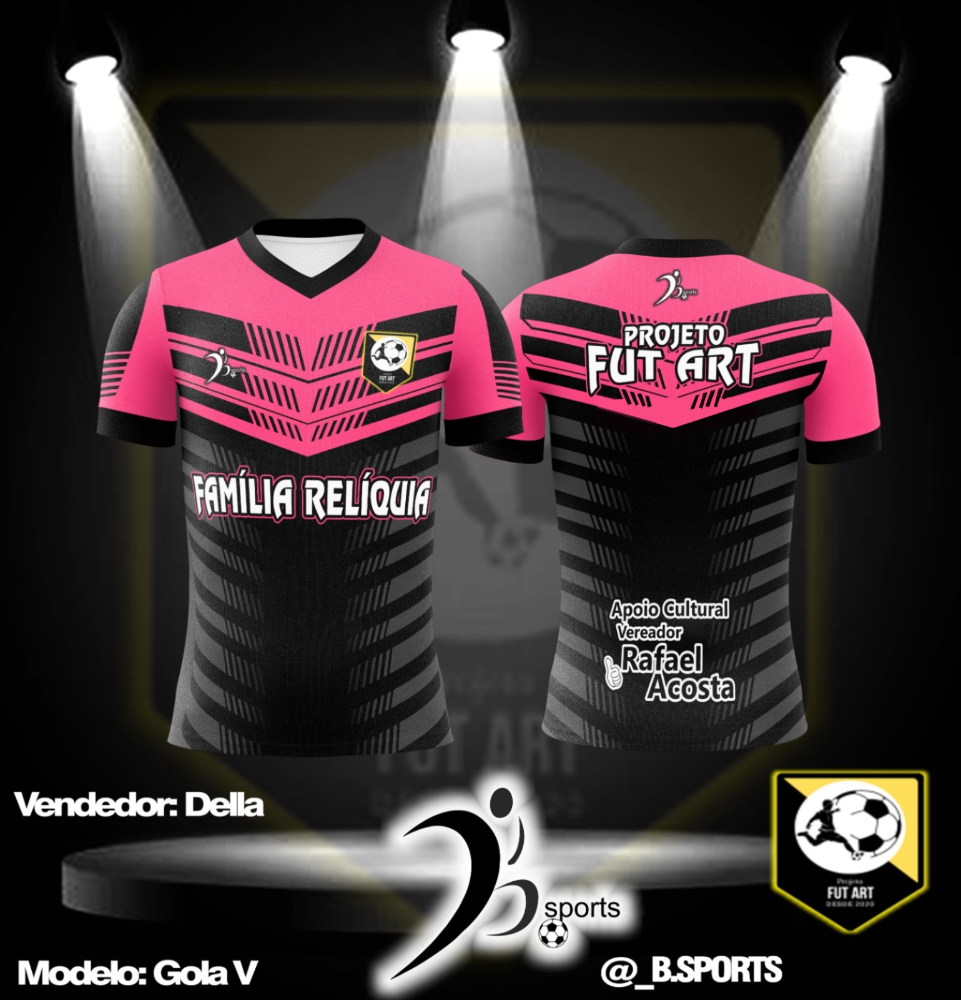
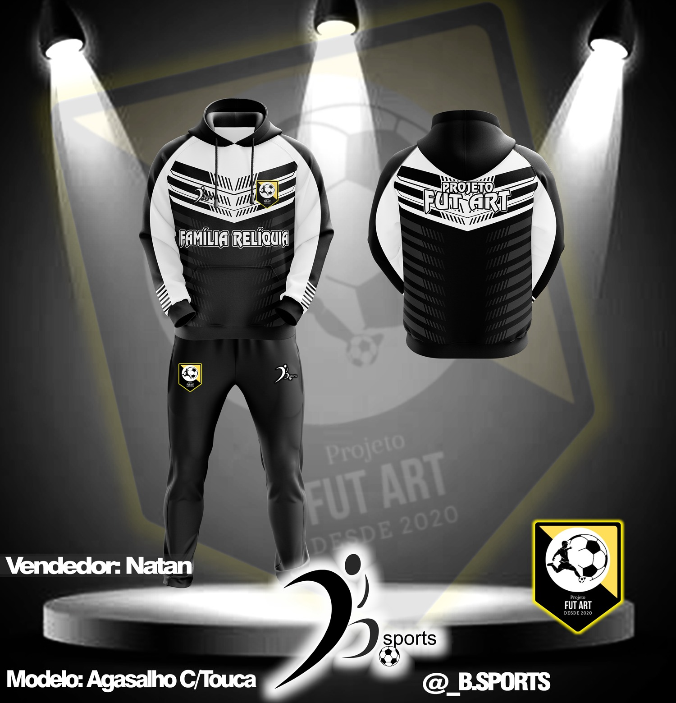
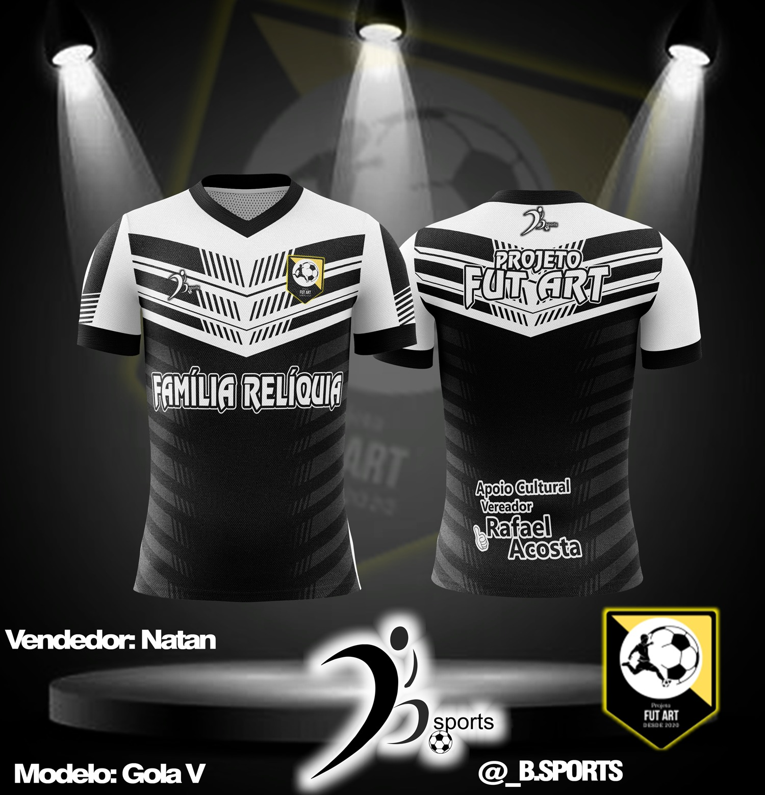
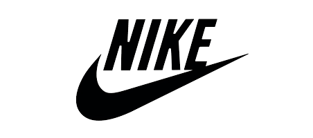
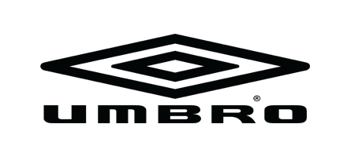

O projeto é uma iniciativa voltada para crianças e adolescentes de uma determinada comunidade, com o objetivo de oferecer oportunidades de praticar futebol de forma estruturada, promovendo o desenvolvimento físico, técnico, social e emocional dos participantes. Em resumo, o projeto tem como objetivo oferecer acesso ao esporte, desenvolver habilidades técnicas e sociais, promover a inclusão social e fortalecer a comunidade como um todo. Com treinamentos estruturados, apoio educacional e a participação ativa da comunidade, busca-se formar jovens atletas e cidadãos conscientes e preparados para o futuro.
"O PFA já era um sonho que carregava desde quando eu era jovem. Sempre gostei de aprender e ensinar junto aos meus amigos, jogávamos na rua incomodando os vizinhos, porém a esperança se fazia sempre presente. Com a chegada do novo espaço de lazer e esporte (quadra) assim pude conversas com alguns amigos e surgiu a oportunidade de tornar meu sonho em realidade, um projeto com principal objetivo de mostrar que o esporte é vida. Em Fev/2020 criei o PFA e dei início não só ao meu sonho, mas também início a um projeto onde pudemos construir novas histórias para muitas crianças."
Carlos Silva


O amarelo representa o sorriso e a alegria das crianças onde além de aprender passam a gostar do esporte
O branco representa a união de todos e a paz que passamos aos alunos mesmo com dias difíceis
O preto representa , a sombra de que jamais poderá nos impedir de ser o que queremos ser (jogadores)
Onde buscamos para cada atleta um bom condicionamento físico, resistência , agilidade , performance . E assim podemos concluir que irá ter um bom desempenho em cada partida.
Cada atleta passa por um treino de fortalecimento muscular , assim possuirá mais força , tanto no chute como em uma jogada de corpo.
sabemos que cada atleta pode ter suas habilidades diferenciadas , por tanto o coletivo é importante para que possamos unir cada atleta e fazer entrosamento de toques , jogadas ensaiadas e chutes a gol.

Masculino - Feminino
(Preto e Amarelo)

Masculino - Feminino
(Rosa e Preto)

Masculino - Feminino
(Preto e Branco)

Masculino - Feminino
(Preto e Branco)

